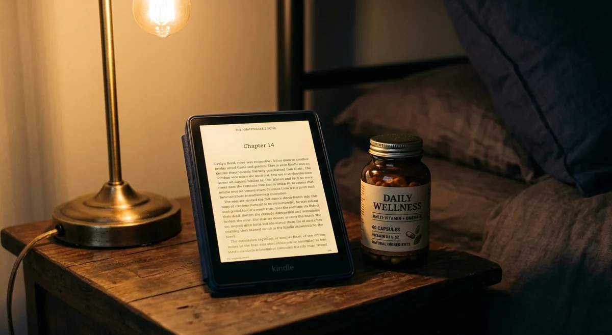

What Is the Best Evening Routine to Improve Sleep and Recovery?
The best evening routine for sleep and recovery has three phases: stop stimulating your nervous system (screens, work, stress), signal your body that sleep is coming (dim lights, lower temperature, magnesium), and create an environment that protects deep sleep (darkness, white noise, cool room). Don
As an Amazon Associate I earn from qualifying purchases.
Most productivity advice focuses on mornings. But how you end your day determines the quality of your sleep — and your sleep determines everything else. Energy, focus, mood, decision-making, metabolism. All of it runs on recovery.
If you're looking for thebest evening routine for sleep and recoveryas a busy adult, the good news is that a few consistent actions in the last 60–90 minutes of your day produce outsized results. You don't need a complicated wind-down ritual. You need the right triggers, in the right order.
Here's what actually works.
Quick Answer
The best evening routine for sleep and recovery has three phases: stop stimulating your nervous system (screens, work, stress), signal your body that sleep is coming (dim lights, lower temperature, magnesium), and create an environment that protects deep sleep (darkness, white noise, cool room). Done consistently, this routine improves sleep quality within 1–2 weeks.
Why Your Evening Routine Matters More Than You Think
Your body doesn't switch from "alert" to "asleep" like a light switch. It transitions gradually — and that transition depends on signals. Light levels, cortisol, body temperature, and mental activity all send messages to your brain about whether it's time to sleep or stay awake.
When you work until 11pm, scroll social media in bright light, and then expect to fall asleep immediately, you're fighting your own biology. The result: you lie awake, sleep lightly, and wake up unrested despite spending 7–8 hours in bed.
A good evening routine works with your biology instead of against it.
The Best Evening Routine for Sleep and Recovery
Phase 1: The Hard Stop (90 Minutes Before Bed)
The most important moment in your evening routine isn't what you do — it's when you stop doing certain things.
Stop working.Work keeps cortisol elevated and your problem-solving brain active. Even checking email "quickly" reactivates the stress response. Set a hard stop time and enforce it.
Dim your lights.Bright overhead lighting suppresses melatonin production. After your hard stop, switch to lamps, candles, or warm-tone lights. This single change accelerates melatonin release and makes falling asleep easier.
Set your wind-down alarm.Most people set a morning alarm. Set an evening one too — 90 minutes before your target bedtime. When it goes off, everything stimulating stops.
TheHatch Restore 3automates this phase completely. Program it to gradually dim your room and play calming sounds at your wind-down time — your environment starts signaling "sleep time" without you having to think about it. The same device wakes you gently with a sunrise simulation in the morning.
Phase 2: Active Wind-Down (60 Minutes Before Bed)
Replace stimulating activities with genuinely calming ones:
Read a physical book or e-reader.Reading is one of the most effective pre-sleep activities — it reduces stress by up to 68% within 6 minutes according to research from the University of Sussex. The key is avoiding screens with blue light.
TheKindle Paperwhiteuses e-ink technology that's significantly easier on your eyes than a phone or tablet, with a warm light mode for evening reading. No notifications, no social media, no rabbit holes — just reading. Ten minutes before bed instead of scrolling changes your entire sleep quality.
Take magnesium.Magnesium activates the parasympathetic nervous system, regulates GABA (your brain's calming neurotransmitter), and improves slow-wave sleep depth. It's most effective when taken 30–60 minutes before bed.
BIOptimizers Magnesium Breakthroughcombines 7 forms of magnesium including glycinate, malate, and threonate — each supporting different aspects of sleep quality and nervous system recovery. This is one of the highest-ROI additions to any evening routine.
Do light stretching or breathing.5–10 minutes of gentle stretching or slow breathing activates the vagus nerve and shifts your nervous system from sympathetic (alert) to parasympathetic (rest) mode. You don't need a yoga routine — just slow movements and deliberate breathing.
Phase 3: Sleep Environment Setup (30 Minutes Before Bed)
Your bedroom environment either supports deep sleep or fights it. Most people's bedrooms are too warm, too bright, and too noisy for optimal recovery.
Temperature:Your core body temperature needs to drop 1–2°F to enter deep sleep. The ideal bedroom temperature is 60–67°F (15–19°C). If you can't control your thermostat that precisely, theBedJet 3cools or warms your bed automatically with Biorhythm technology — adjusting temperature throughout the night to match your natural sleep cycles.
Light:Even small amounts of light disrupt melatonin production and fragment sleep. TheManta Sleep Mask Proprovides complete blackout without putting pressure on your eyes — critical for light sleepers, shift workers, or anyone with a parssure on your eyes — critical for light sleepers, shift workers, or anyone with a partner on a different schedule.
Noise:Inconsistent noise — traffic, neighbors, a snoring partner — causes micro-arousals that fragment your sleep without you realizing it. TheLectroFan Evodelivers consistent, non-looping white noise all night — far more reliable than any app or fan, which loop and create audible patterns your brain learns to notice.
The Complete Evening Routine at a Glance
- 90 min before bed:Hard stop on work + dim lights + wind-down alarm
- 60 min before bed:Read on Kindle + take magnesium + light stretching
- 30 min before bed:Lower room temperature + sleep mask ready + white noise on
- Bedtime:Same time every night — consistency is the foundation of everything
Recommended Products
| Product | Why It Helps | Link |
|---|---|---|
| Hatch Restore 3 | Automates wind-down with dimming light and sleep sounds | View on Amazon |
| Kindle Paperwhite | Blue-light-free reading — replaces phone scrolling before bed | View on Amazon |
| BIOptimizers Magnesium Breakthrough | 7-form magnesium — calms nervous system for deeper sleep | View on Amazon |
| Manta Sleep Mask Pro | Complete blackout without eye pressure — protects deep sleep | View on Amazon |
| LectroFan Evo | Non-looping white noise — eliminates micro-arousals from noise | View on Amazon |
Disclosure: We may earn a small commission if you purchase through our links, at no extra cost to you. We only recommend products we'd genuinely use ourselves.

Common Evening Routine Mistakes
- Working right up until bed— keeps cortisol elevated and delays melatonin release by hours
- Bright overhead lights in the evening— suppresses melatonin; switch to lamps after 8pm
- Using your phone as an alarm clock— keeps it in the bedroom, where the temptation to scroll before sleep is constant
- Inconsistent bedtime— varying your sleep time by more than 30 minutes disrupts your circadian rhythm and makes falling asleep harder
- Alcohol to wind down— reduces sleep onset time but destroys REM and deep sleep quality in the second half of the night
FAQ
Q: How long does it take for an evening routine to improve sleep?
Most people notice meaningful improvement within 1–2 weeks of consistent practice. Your circadian rhythm responds quickly to consistent environmental signals — light, temperature, and timing.
Q: What if I can't control my bedtime because of family or work?
Focus on what you can control: the 30 minutes before whatever time you do go to bed. Even a compressed version of the routine — dim lights, no screens, magnesium — improves sleep quality significantly compared to no routine at all.
Q: Is it okay to watch TV before bed?
Passive, low-stimulation TV in a dimly lit room is less disruptive than scrolling social media. The issue is bright screens, engaging content that keeps your brain active, and the tendency to watch "one more episode" past your target bedtime.
Q: What's the single most impactful evening habit?
Consistent bedtime. Going to sleep at the same time every night — including weekends — does more for sleep quality than any supplement, device, or routine element. Your circadian rhythm is anchored by consistency.
Q: Should I avoid exercise in the evening?
Intense exercise within 2–3 hours of bed raises core temperature and cortisol, which delays sleep. Light exercise — walking, stretching, yoga — is fine in the evening and can actually improve sleep quality.
Final Tip
Building thebest evening routine for sleep and recoverystarts with one decision tonight: set a hard stop time and stick to it.
Pick a time — say, 10pm. When that alarm goes off, close the laptop, put your phone on the charger across the room, and dim the lights. That's your evening routine for week one. Add elements from there.
That's one small daily move — exactly the kind that adds up to a big lifetime gain.
Want more practical health habits for busy adults? Browse our guides at EverydayFitHabits.com — built for people who don't have time to waste.